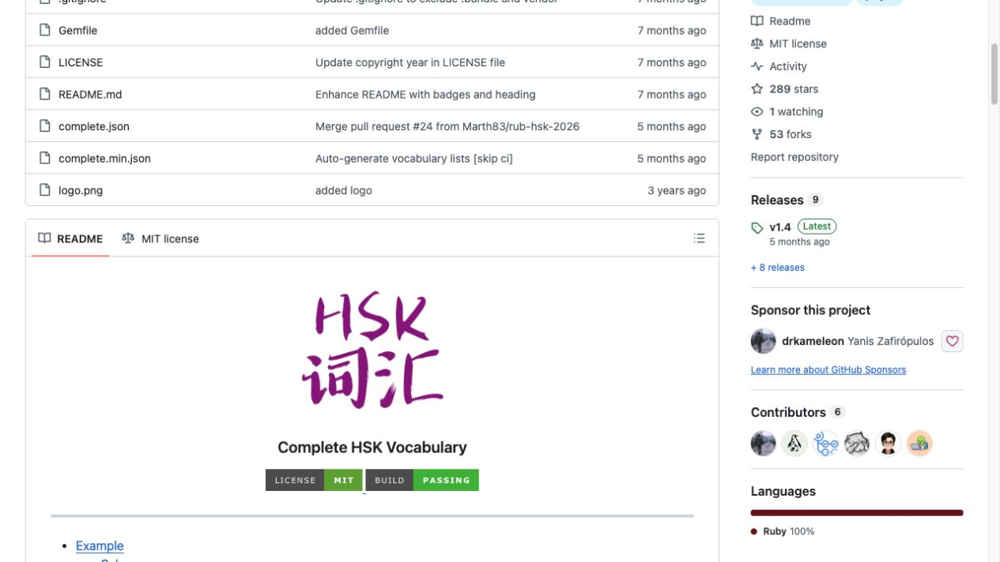
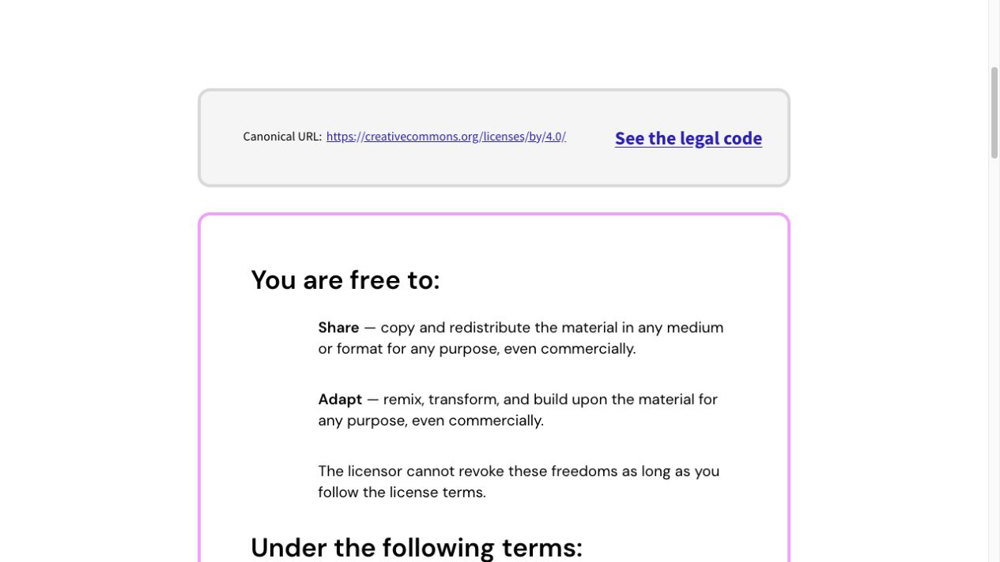

Verbes · evidence archive
免费可商用授权证据
Licences commerciales / Commercial-use licence evidence
本页归档“跟数码娃娃学动词”中实际使用或核对的资料授权依据。截图与许可证文本一起公开，方便审阅；应用内教学说明为原创概述，不复制第三方教材正文。
归档：2026-11-04MIT · SIL OFL 1.1 · CC BY 4.0Licences commerciales / Commercial-use licence evidence
本页归档“跟数码娃娃学动词”中实际使用或核对的资料授权依据。截图与许可证文本一起公开，方便审阅；应用内教学说明为原创概述，不复制第三方教材正文。
归档：2026-11-04MIT · SIL OFL 1.1 · CC BY 4.0离线动词索引由 Complete HSK Vocabulary（© 2026 Yanis Zafirópulos）生成。MIT 许可证允许在保留版权与许可证声明的前提下使用、复制、修改、发布、分发、再许可和销售副本。

应用中文字形使用 LXGW WenKai。SIL OFL 1.1 允许字体的使用、研究、修改与再分发，也允许将其用于商业作品；字体本身不得单独出售。
法语动词说明的语言核对参考采用 CC BY 4.0 开放资料：Mirabelle Tinio 的 Le Français Interactif（BCcampus）及 Pamuksac 等人的 CMLF / EDP Sciences 论文。应用只写入原创简述；CC BY 4.0 允许商业使用，但要求恰当署名、提供许可证链接并说明改动。
